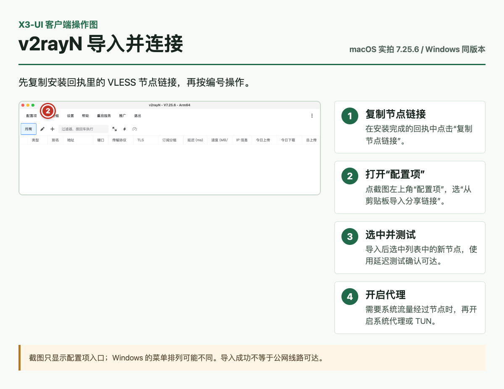
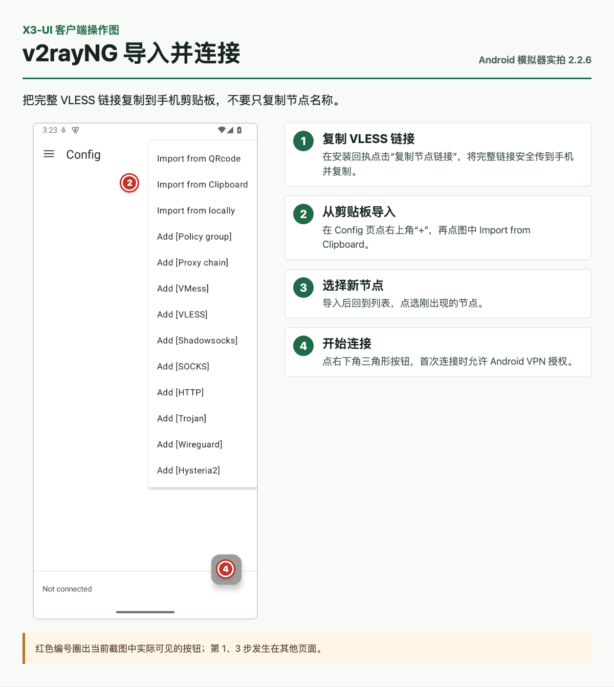
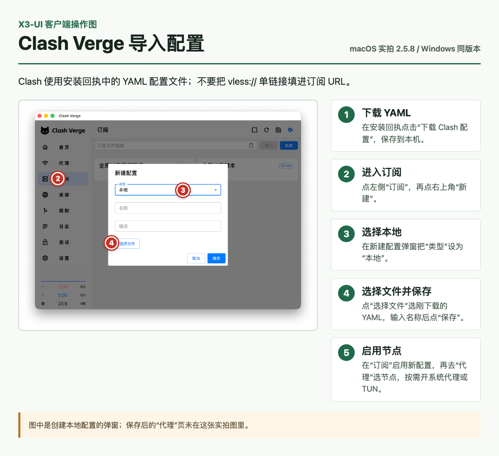
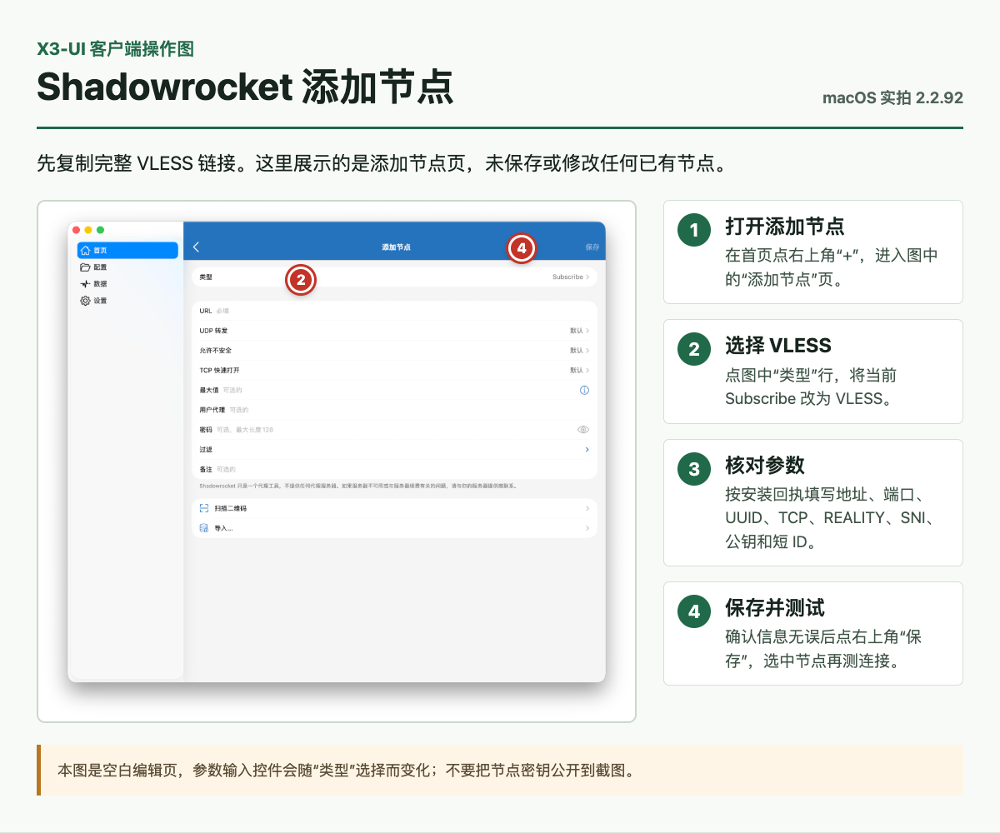
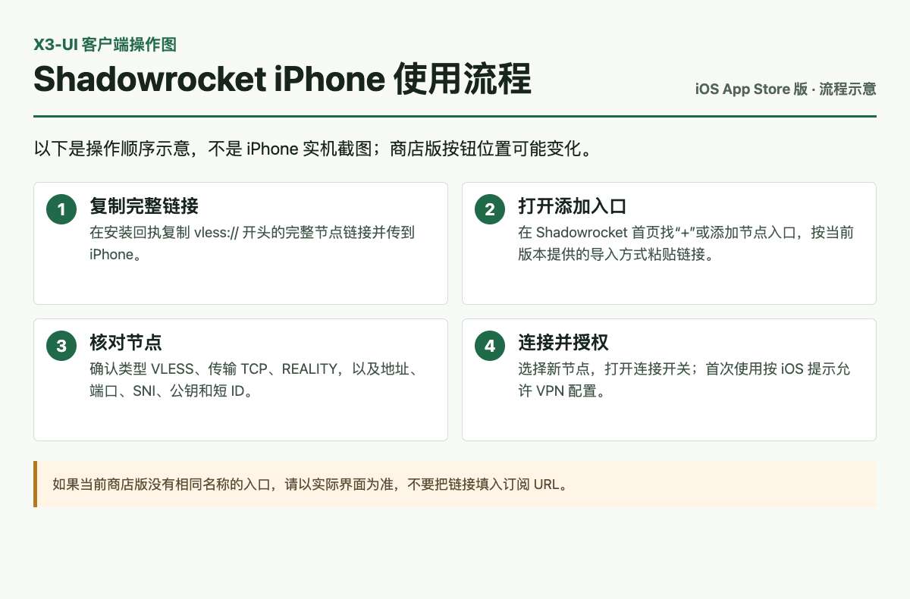
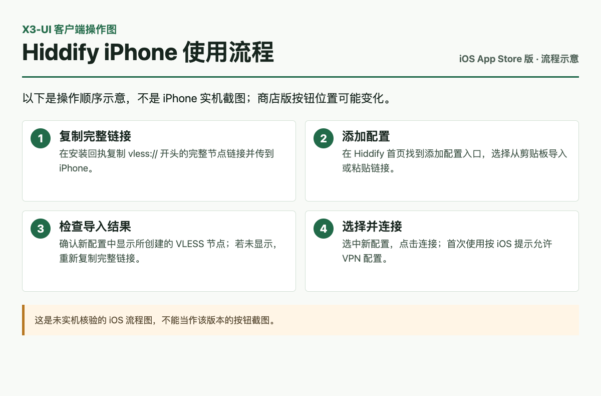

以下客户端支持 VLESS + REALITY。版本兼容不等于线路可达；连接超时时请先检查本机到 VPS 的网络路径。
Windowsv2rayN 7.25.6 / Clash Verge Rev 2.5.8
iOSHiddify / Shadowrocket 商店版
Androidv2rayNG 2.2.6 / Clash Meta 2.11.35
macOSv2rayN 7.25.6 / Clash Verge Rev 2.5.8 / Shadowrocket
iOS 应用由 App Store 分发，不能作为 IPA 文件放入本地包；其余客户端安装文件均在本地包内。
使用方法
选择客户端查看图文步骤。图片里的红色编号标明实际可见的操作位置，右侧编号说明具体动作；未出现在截图中的后续步骤会明确说明。iOS 商店版尚无同版本实拍，使用标明“流程示意”的操作卡。
v2rayNWindows / macOS · 7.25.6
- 在安装回执点击“复制节点链接”。
- 打开 v2rayN，在“配置项”菜单选择“从剪贴板导入分享链接”。
- 选中导入的节点，测试延迟，再按需开启系统代理或 TUN。

macOS 7.25.6 实拍标注，点图查看完整步骤。Windows 同版本的菜单排列可能不同。
v2rayNGAndroid · 2.2.6
- 把安装回执中的节点链接安全地传到安卓手机，并在手机上复制。
- 打开 v2rayNG，点击右上角“+”，选择“Import from Clipboard”（从剪贴板导入）。
- 选中新节点，点击右下角连接按钮，并允许系统 VPN 授权。

Android 2.2.6 实拍标注；点图看完整导入与连接步骤。
Clash Verge RevWindows / macOS · 2.5.8
- 先在安装回执点击“下载 Clash 配置”，保存 YAML 文件。
- 打开“订阅”→“新建”，把“类型”改为“本地”，输入名称，点击“选择文件”选中该 YAML，再保存。
- 启用新配置，在“代理”中选择节点；需要全设备代理时再开启“系统代理”或 TUN。

macOS 2.5.8 实拍标注，点图查看完整步骤。单条 vless:// 链接不能填入订阅 URL。
Clash Meta for AndroidAndroid · 2.11.35
- 在安装回执下载 Clash YAML 文件，安全地传到安卓手机。
- 打开“Profile”→ 右上角“+”→“File / Import from File”，选择该 YAML。
- 返回首页选中 Profile，点击“Tap to start”并允许 VPN；在代理组中选择节点。
ShadowrocketmacOS · 2.2.92
- 在 Mac 上复制安装回执的 VLESS 节点链接。
- 打开 Shadowrocket，点击右上角“+”；在“添加节点”页把“类型”从 Subscribe 改为 VLESS。
- 核对端口、REALITY 的 SNI、公钥和短 ID，再保存、选中节点并测试连接。

macOS 2.2.92 空白添加页实拍标注；点图查看步骤。未展示、修改或保存现有节点。
ShadowrocketiOS · App Store 2.2.92
- 把安装回执的完整 VLESS 链接安全地传到 iPhone，并在手机上复制。
- 打开 Shadowrocket，使用添加或导入入口粘贴链接；核对 VLESS、TCP 与 REALITY 参数。
- 选中节点，开启连接并允许 iOS 的 VPN 配置请求。

点图查看完整流程。非 iPhone 实拍；当前商店版按钮位置未实机核验。
HiddifyiOS · App Store 4.0
- 把安装回执的 VLESS 链接安全地传到 iPhone，并在手机上复制。
- 在 Hiddify 的添加配置入口选择从剪贴板导入，并检查导入的节点信息。
- 选择该配置，点击连接并允许 iOS 的 VPN 配置请求。

点图查看完整流程。非 iPhone 实拍；当前商店版按钮位置未实机核验。
节点导入成功不代表线路可达。若仅这一条超时，请先停止其他全局代理再测，或对比同一设备的物理网络与中转路径。